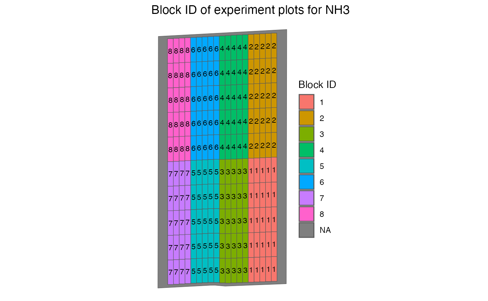

Delineate blocks on a trial design and assign block id to all the plots
Examples
#--- load rate information ---#
data(td_single_input)
#--- add blocks ---#
td_with_blocks <- add_blocks(td_single_input)
#--- take a look ---#
td_with_blocks$trial_design
#> [[1]]
#> Simple feature collection with 191 features and 6 fields
#> Geometry type: POLYGON
#> Dimension: XY
#> Bounding box: xmin: -16.70078 ymin: 39.11957 xmax: -16.69604 ymax: 39.12696
#> Geodetic CRS: WGS 84
#> First 10 features:
#> rate strip_id plot_id type block_id plot_id_within_block
#> 1 10 1 1 experiment 1 1
#> 2 20 1 2 experiment 1 2
#> 3 30 1 3 experiment 1 3
#> 4 40 1 4 experiment 1 4
#> 5 50 1 5 experiment 1 5
#> 6 10 1 6 experiment 2 1
#> 7 20 1 7 experiment 2 2
#> 8 30 1 8 experiment 2 3
#> 9 40 1 9 experiment 2 4
#> 10 50 1 10 experiment 2 5
#> geometry
#> 1 POLYGON ((-16.6964 39.11976...
#> 2 POLYGON ((-16.6964 39.12047...
#> 3 POLYGON ((-16.6964 39.12118...
#> 4 POLYGON ((-16.6964 39.12189...
#> 5 POLYGON ((-16.6964 39.1226,...
#> 6 POLYGON ((-16.6964 39.12331...
#> 7 POLYGON ((-16.6964 39.12402...
#> 8 POLYGON ((-16.69641 39.1247...
#> 9 POLYGON ((-16.69641 39.1254...
#> 10 POLYGON ((-16.69641 39.1261...
#>
#--- visualize ---#
viz(td_with_blocks, type = "block_id")
#> Warning: Removed 1 row containing missing values or values outside the scale range
#> (`geom_text()`).
